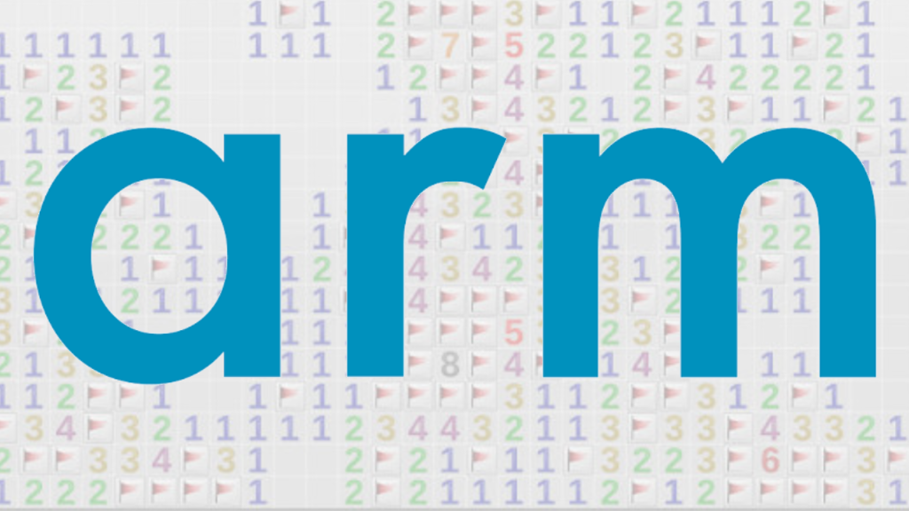
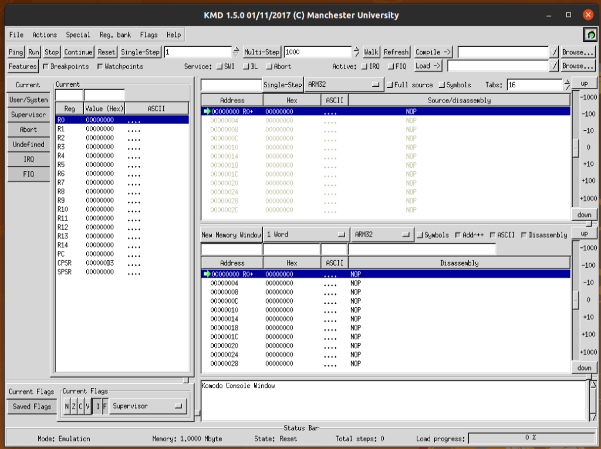
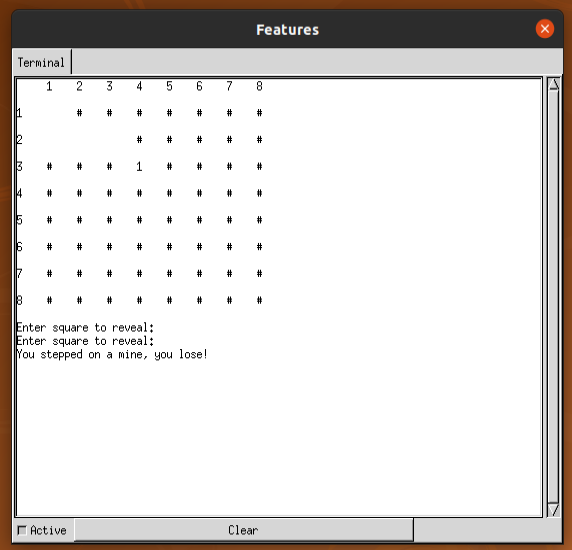
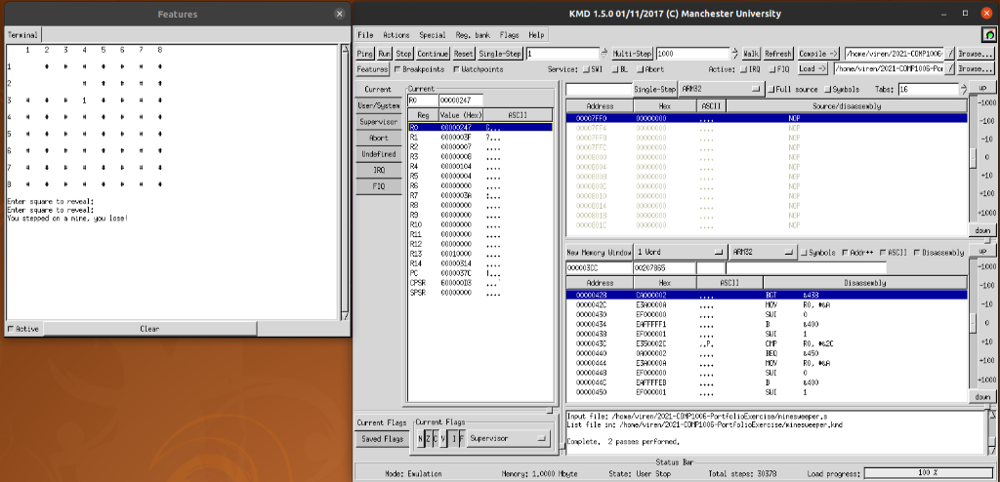

ARM Minesweeper
Overview
Building Minesweeper in raw ARM Assembly was one of the most rewarding low-level systems projects I undertook at university. The goal was to construct a fully functional, interactive game running on a simulated 32-bit ARM processor inside the Komodo GUI emulator.

Instead of relying on modern graphics frameworks, the game interface is rendered entirely in ASCII
in a
terminal-like I/O window. The game takes place on an 8 × 8 grid containing 8 randomly placed mines.
Players enter 2D coordinates (such as 2,1) to uncover squares, attempting to reveal all
56 safe cells without detonating a mine.

Design
Without high-level abstractions or dynamic memory allocators, designing the memory layout was the most critical step. I represented the 64 board squares in memory as a contiguous array of 32-bit integers stored in row-major order.
Because each cell occupies 4 bytes, converting a 2D coordinate (r, c) into a memory
offset
was accomplished efficiently using bitwise arithmetic:
Index = 8 × r + c | Memory Offset = (8r + c) << 2
To cleanly manage game state, I implemented two parallel 64-word arrays:
- Board Array: Stores the underlying cell values—
0for empty spaces,1–8for surrounding mine counts, and-1for mines. - Board Mask Array: Tracks square visibility—
0indicates a revealed square (displaying its actual contents), while non-zero values keep the square covered under a#.
Implementation
To keep the assembly codebase modular and readable, I broke the logic into discrete assembly source
files
included into the main entry point (minesweeper.s):
- Procedural Mine Generation (
generateBoard.s): Uses a pseudo-random generator (randu) to select random indices, places 8 non-overlapping mines, and increments adjacent cell counters. - Input Parsing & Validation (
boardSquareInput.s): Handles terminal input via software interrupts (SWI 1), parsesrow,colstrings, validates bounds, and returns the calculated linear index. - ASCII Renderer (
printMaskedBoard.s): Iterates through the mask array to conditionally display hidden hashes or revealed numbers usingSWI 0(character output) andSWI 4(integer output).
Strict adherence to the ARM Procedure Call Standard (APCS) was vital. Subroutines
pass arguments through R0–R3 and use STMFD/LDMFD
stack operations to preserve registers R4–R11 and LR. This
guaranteed that nested function calls (like invoking randu inside the board generator)
executed cleanly without register corruption.

Reflections
This was one of the most enjoyable projects during my time at university. The project built itself up logically and the GUI was extremely helpful with its instruction stepper and register bank monitor. Debugging would have been much more difficult without it! It enabled me to have a much better understanding of how low-level code executes under the hood, directly seeing how the code manipulated memory and changed register values.
The biggest challenges were pointer arithmetic in memory and ensuring that registers were used optimally. The use of the stack ensured that a minimal number of registers were used.